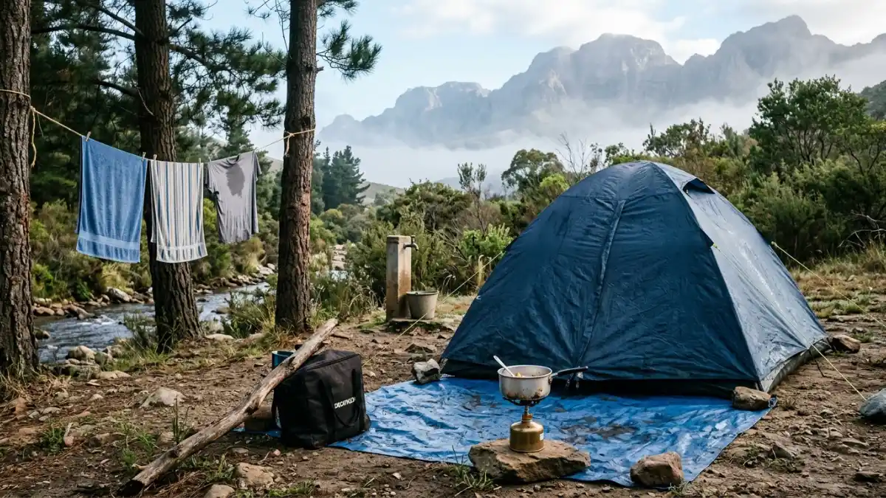
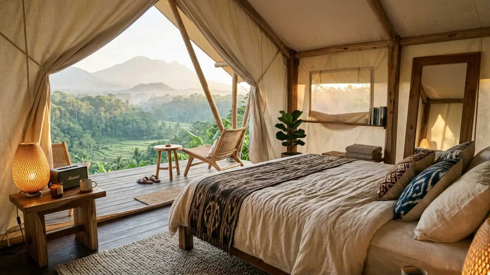

Camping ground budget menawarkan pengalaman alam yang lebih murni dengan tarif terjangkau mulai dari Rp15.000 per malam.Camping ground murah lebih tepat untuk camper berpengalaman yang membawa perlengkapan sendiri dan memprioritaskan alam, sementara camping ground premium lebih cocok untuk keluarga dengan anak kecil, pemula, atau siapa pun yang menginginkan kenyamanan tanpa mengorbankan pengalaman alam.
Perbedaan Utama Camping Ground Murah dan Premium
Perbedaan nyata antara camping ground murah dan premium terletak pada tiga aspek utama: kualitas fasilitas fisik, tingkat pengelolaan profesional, dan pengalaman keseluruhan yang ditawarkan kepada pengunjung.
Camping Ground Murah (Budget)
Umumnya dikelola oleh instansi pemerintah atau perorangan dengan investasi fasilitas yang terbatas. Tarif berkisar Rp15.000 hingga Rp75.000 per orang per malam. Fasilitas bersifat fungsional: toilet sederhana, sumber air, dan lahan untuk tenda.
- Tidak ada staf yang aktif mendampingi pengunjung
- Suasana lebih alami dan kurang ramai
- Ideal untuk camper berpengalaman yang ingin menikmati alam dengan biaya minimal
Camping Ground Premium
Dikelola oleh perusahaan wisata profesional dengan standar operasional yang ketat. Tarif mulai dari Rp150.000 hingga Rp300.000 per orang per malam.
- Fasilitas meliputi toilet bersih dengan air panas, listrik, area parkir aman, staf yang siap membantu, dan sering kali pilihan sewa perlengkapan camping
- Pengalaman lebih terstruktur dengan paket yang jelas termasuk aktivitas pendukung
Kapan Memilih Camping Ground Murah?
Camping ground murah adalah pilihan tepat ketika pengunjung sudah berpengalaman berkemah, memiliki perlengkapan sendiri yang lengkap, dan memprioritaskan pengalaman alam yang murni di atas kenyamanan fasilitas.
Kondisi ideal memilih camping ground budget:
- Anda atau rombongan sudah pernah camping sebelumnya dan tahu cara mendirikan tenda
- Perlengkapan camping sudah dimiliki: tenda, sleeping bag, matras, peralatan masak
- Rombongan terdiri dari orang dewasa atau remaja yang fit secara fisik
- Tujuan utama adalah mendekatkan diri dengan alam secara langsung
- Budget sangat terbatas dan tidak ada fleksibilitas untuk pengeluaran tambahan
Berdasarkan data komunitas hiking Indonesia (2024), sekitar 58 persen camper reguler lebih memilih camping ground budget karena menganggap fasilitas premium justru mengurangi keaslian pengalaman alam bebas.
Kapan Memilih Camping Ground Premium?
Camping ground premium adalah pilihan lebih bijak ketika rombongan menyertakan anak kecil, lansia, atau anggota yang baru pertama kali berkemah, karena fasilitas dan pengelolaan yang lebih baik meminimalkan risiko dan meningkatkan keselamatan.
Kondisi ideal memilih camping ground premium:
- Berkemah bersama keluarga dengan anak di bawah 12 tahun
- Ada anggota rombongan yang memiliki kondisi kesehatan tertentu
- Ini adalah pengalaman camping pertama Anda atau sebagian besar rombongan
- Anda memiliki waktu terbatas untuk mempersiapkan perlengkapan sendiri
- Tujuan adalah menikmati alam sekaligus mendapatkan pengalaman yang menyenangkan tanpa stres logistik
Glamping: Alternatif Premium untuk Pengalaman Paling Nyaman
Glamping (glamorous camping) adalah kategori paling premium dalam wisata berkemah, menggabungkan kenyamanan akomodasi hotel dengan pengalaman berada di alam terbuka, dengan harga yang mencerminkan tingkat kenyamanan tersebut.
Tarif glamping di Indonesia umumnya dimulai dari Rp250.000 hingga Rp800.000 atau lebih per orang per malam.
Fasilitas yang didapatkan biasanya mencakup tenda atau kubah transparan yang sudah dilengkapi kasur berkualitas, bantal, selimut, pencahayaan dekoratif, dan kadang kamar mandi pribadi yang terhubung langsung dengan tenda. Beberapa lokasi glamping bahkan menawarkan layanan sarapan yang sudah termasuk dalam paket.
Glamping paling cocok untuk pasangan yang ingin merayakan momen spesial di alam, keluarga yang ingin memperkenalkan anak pada pengalaman outdoor tanpa risiko ketidaknyamanan, atau wisatawan yang penasaran dengan kehidupan berkemah tetapi tidak siap dengan tantangan teknisnya.

Glamping menawarkan kenyamanan akomodasi hotel dengan pengalaman alam terbuka untuk momen spesial.Apakah Camping Ground Premium Selalu Lebih Worth It?
Tidak ada jawaban universal: camping ground premium lebih worth it jika anggota rombongan membutuhkan fasilitas lebih, tetapi bisa terasa boros bagi camper berpengalaman yang tidak memerlukan layanan tambahan tersebut.
Pertimbangkan beberapa pertanyaan ini sebelum memutuskan:
- Apakah ada anggota rombongan yang akan sangat keberatan dengan fasilitas terbatas?
- Apakah keamanan anak-anak menjadi prioritas yang tidak bisa dikompromikan?
- Apakah perjalanan ini adalah momen spesial yang ingin dikenang dengan nyaman?
- Apakah budget memungkinkan tanpa harus mengorbankan pengeluaran penting lainnya?
Jika jawabannya ya untuk sebagian besar pertanyaan di atas, camping ground premium atau glamping adalah investasi yang sepadan.
Pilihan antara camping ground murah dan premium bukan soal mana yang lebih baik secara absolut, melainkan mana yang paling sesuai dengan kebutuhan dan kondisi rombongan Anda. Gunakan panduan berikut:
- Camper berpengalaman dengan perlengkapan lengkap: pilih camping ground budget untuk pengalaman alam yang lebih murni
- Keluarga dengan anak kecil atau pemula: pilih camping ground premium untuk keamanan dan kenyamanan yang lebih terjamin
- Momen spesial atau ingin kenyamanan maksimal: pilih glamping sebagai alternatif paling premium
FAQ
1. Mana yang lebih aman, camping ground murah atau premium?
Secara umum, camping ground premium cenderung lebih aman karena pengelolaan yang lebih profesional dan fasilitas keselamatan yang lebih baik. Namun, banyak camping ground murah yang dikelola pemerintah juga memiliki standar keamanan yang memadai. Kunci utamanya adalah mengecek ulasan dan bertanya langsung kepada pengelola sebelum memesan, terlepas dari kategori harganya.
2. Apakah camping ground murah cocok untuk anak-anak?
Camping ground murah bisa cocok untuk anak-anak jika orang tua sudah berpengalaman berkemah dan bisa mengantisipasi segala kebutuhan anak selama di alam. Namun, untuk kenyamanan dan keamanan yang lebih terjamin, camping ground premium atau glamping lebih direkomendasikan untuk keluarga dengan anak di bawah usia 8 tahun.
3. Berapa perbedaan harga antara camping ground murah dan premium?
Perbedaan harga bisa sangat signifikan. Camping ground budget umumnya mematok tarif Rp15.000 hingga Rp75.000 per orang per malam, sementara camping ground premium berkisar Rp150.000 hingga Rp300.000 atau lebih. Glamping bisa mencapai Rp800.000 atau lebih per orang per malam di lokasi premium. Perbedaan ini mencerminkan perbedaan fasilitas, pengelolaan, dan pengalaman yang ditawarkan.